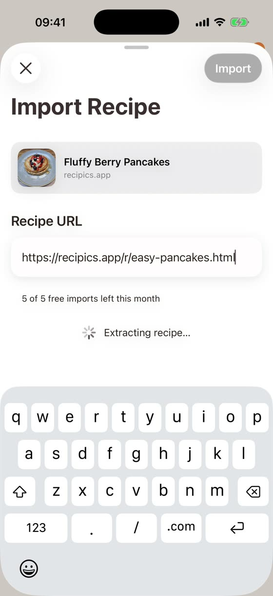
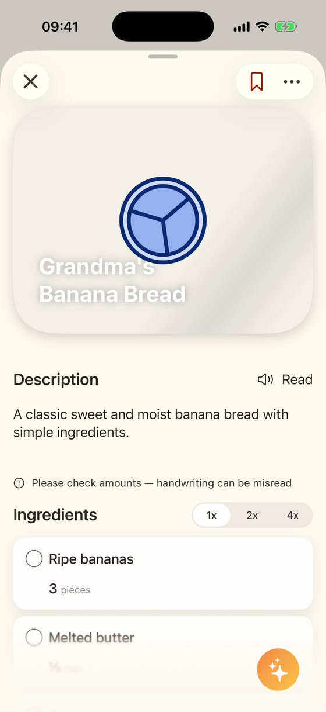

ReciPics
ReciPics
Some recipes are in cookbooks, some on handwritten cards, others in browser bookmarks or saved reels. ReciPics brings them together in one cookbook on your iPhone, so you find them again when you want to cook. Edit them, scale servings, build your grocery list and have the steps read aloud.
View on the App Store


Real screens from the app. Examples: a recipe from our own site recipics.app, and a sample card we made for testing: a digital image in a handwriting-style font, not a photo of real paper. Real handwriting is harder to read than this.
Open the recipe, check the ingredients, amounts and steps, and tap “Add to Cookbook” to keep it.
ReciPics reads recipes from photos and links with AI, and AI can make mistakes. Compare an imported recipe with the original before you cook, especially amounts and temperatures. ReciPics may add short step titles and suggested ingredient alternatives (shown as “alternative”). These are not from the original.
Check ingredients yourself for allergies or intolerances; ReciPics can misread or miss an ingredient.
Comparing recipe apps? ReciMe alternative: ReciPics compared · Paprika alternative: ReciPics compared
Each photo scan uses the app's AI allowance, which is limited without Premium. For new users without a paid plan, the number of link imports per month is limited. The app shows how many you have left.
Recipes from cookbooks, websites and social media are usually protected by copyright. Use ReciPics for your private cookbook only, and don't share or publish imported recipes you have no right to share. ReciPics is not affiliated with, endorsed by or sponsored by Instagram, Meta or TikTok. The names are used only to describe which links the app can read. To read a recipe, the photo and the text recognized on your iPhone, or the link (for videos also the audio and some frames), are sent to our servers and service providers, including our AI provider OpenAI (USA); see the Privacy page.
Get ReciPics on the App StoreFor iPhone with iOS 26 or later.